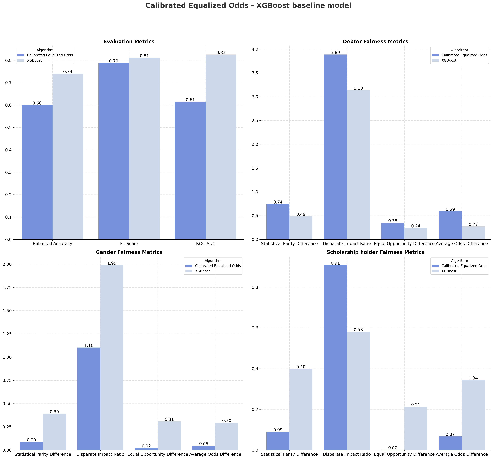
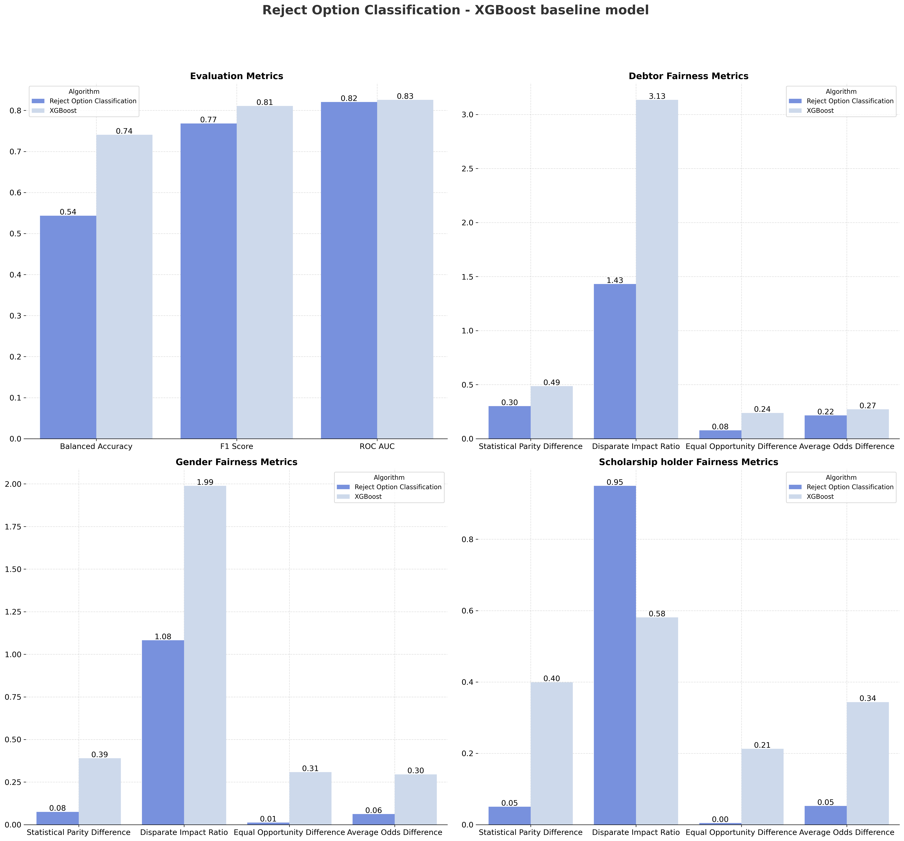

Post-Processing Bias Mitigation
Post-processing techniques adjust model predictions after training to satisfy fairness constraints. By modifying outputs rather than training data or algorithms, these methods enable fairness corrections without retraining, making them particularly useful for deployed models or when training data cannot be modified.
Calibrated Equalized Odds
G. Pleiss, M. Raghavan, F. Wu, J. Kleinberg, and K. Q. Weinberger, “On Fairness and Calibration,” Conference on Neural Information Processing Systems, 2017
Calibrated Equalized Odds is a post-processing technique that adjusts classifier decision thresholds to achieve equalized odds—ensuring equal true positive rates and false positive rates across protected groups. The method operates on the predicted probabilities or scores from any trained classifier, applying group-specific threshold adjustments to satisfy fairness constraints.
The algorithm optimizes a linear transformation of predicted probabilities for each protected group:
- Computes group-specific mixing rates that determine how to blend base predictions with random decisions
- Finds optimal thresholds that minimize classification error subject to equalized odds constraints
- Applies calibrated decision rules that map predicted probabilities to final binary predictions
The method enforces equalized odds by ensuring:
\(P(\hat{Y}=1 | Y=y, A=0) = P(\hat{Y}=1 | Y=y, A=1)\) for \(y \in \{0, 1\}\)
This guarantees equal treatment across demographic groups for both positive and negative true labels. The calibration process finds the fairest decision thresholds while maintaining the best possible accuracy within the constraint space.
- Model-agnostic: Works with any classifier that outputs probability scores
- No retraining required: Adjusts predictions from existing models
- Theoretical guarantees: Provably achieves optimal accuracy under equalized odds constraints
Results:

Calibrated Equalized Odds achieves mixed fairness improvements with significant performance degradation:
Performance Metrics:
| Performance Metric | Baseline | Calibrated Equalized Odds |
|---|---|---|
| Balanced Accuracy | 0.74 | 0.60 |
| F1-Score | 0.81 | 0.79 |
| ROC-AUC | 0.83 | 0.61 |
Fairness Improvements:
| Protected Attribute | Metric | Baseline | Calibrated Equalized Odds | Improvement |
|---|---|---|---|---|
| Debtor | Statistical Parity Difference | 0.49 | 0.74 | ✗ |
| Disparate Impact Ratio | 3.14 | 3.89 | ✗ | |
| Equal Opportunity Difference | 0.24 | 0.35 | ✗ | |
| Average Odds Difference | 0.27 | 0.59 | ✗ | |
| Gender | Statistical Parity Difference | 0.39 | 0.09 | ✓ |
| Disparate Impact Ratio | 1.99 | 1.10 | ✓ | |
| Equal Opportunity Difference | 0.31 | 0.02 | ✓ | |
| Average Odds Difference | 0.30 | 0.05 | ✓ | |
| Scholarship holder | Statistical Parity Difference | -0.40 | -0.09 | ✓ |
| Disparate Impact Ratio | 0.58 | 0.91 | ✓ | |
| Equal Opportunity Difference | -0.21 | -0.00 | ✓ | |
| Average Odds Difference | -0.34 | -0.07 | ✓ |
Calibrated Equalized Odds demonstrates highly inconsistent results across protected attributes. While Gender and Scholarship holder achieve substantial fairness improvements, all four Debtor metrics worsen dramatically.
The performance impact is equally concerning: ROC-AUC drops 27%, and Balanced Accuracy decreases 19%, representing the worst predictive performance among all mitigation methods tested.
This suggests the threshold calibration process overcompensated for certain groups while amplifying bias for others.
Reject Option Classification
F. Kamiran, A. Karim, and X. Zhang, “Decision Theory for Discrimination-Aware Classification,” IEEE International Conference on Data Mining, 2012.
Reject Option Classification is a post-processing technique that adjusts predictions within a "critical region" near the decision boundary where the classifier is most uncertain. Rather than applying uniform threshold shifts, this method selectively modifies predictions for instances where small probability changes can significantly improve fairness without sacrificing much accuracy.
The algorithm identifies and adjusts predictions in three steps:
- Critical Region Identification: Define a margin around the decision threshold (e.g., predicted probabilities between 0.4 and 0.6) where predictions are uncertain
- Favorable Adjustment: For unprivileged group members in the critical region, flip predictions to favorable outcomes (0 → 1)
- Unfavorable Adjustment: For privileged group members in the critical region, flip predictions to unfavorable outcomes (1 → 0)
By selectively adjusting predictions only for uncertain cases, the method achieves statistical parity while minimizing accuracy loss. The critical region width controls the fairness-accuracy tradeoff:
- Wider margins: Greater fairness improvements but more prediction changes
- Narrower margins: Smaller fairness gains but higher accuracy preservation
This targeted approach differs from threshold-based methods by focusing corrections where the classifier already exhibits uncertainty, making fairness adjustments less disruptive to overall predictive performance.
Results:

Reject Option Classification achieves moderate fairness improvements with severe accuracy degradation:
Performance Metrics:
| Performance Metric | Baseline | Reject Option Classification |
|---|---|---|
| Balanced Accuracy | 0.74 | 0.54 |
| F1-Score | 0.81 | 0.77 |
| ROC-AUC | 0.83 | 0.82 |
Fairness Improvements:
| Protected Attribute | Metric | Baseline | Reject Option Classification | Improvement |
|---|---|---|---|---|
| Debtor | Statistical Parity Difference | 0.49 | 0.30 | ✓ |
| Disparate Impact Ratio | 3.14 | 1.43 | ✓ | |
| Equal Opportunity Difference | 0.24 | 0.08 | ✓ | |
| Average Odds Difference | 0.27 | 0.22 | ✓ | |
| Gender | Statistical Parity Difference | 0.39 | 0.08 | ✓ |
| Disparate Impact Ratio | 1.99 | 1.08 | ✓ | |
| Equal Opportunity Difference | 0.31 | 0.01 | ✓ | |
| Average Odds Difference | 0.30 | 0.06 | ✓ | |
| Scholarship holder | Statistical Parity Difference | -0.40 | -0.05 | ✓ |
| Disparate Impact Ratio | 0.58 | 0.95 | ✓ | |
| Equal Opportunity Difference | -0.21 | -0.00 | ✓ | |
| Average Odds Difference | -0.34 | -0.05 | ✓ |
Reject Option Classification achieves comprehensive fairness improvements across all 12 metrics while maintaining strong ROC-AUC (0.82, only 1% below baseline). The method dramatically reduces bias for all protected attributes.
However, the 27% drop in Balanced Accuracy (from 0.74 to 0.54) represents a critical weakness.
Despite achieving the most uniform fairness improvements among post-processing methods, the substantial accuracy sacrifice makes this approach impractical for deployment scenarios where balanced predictive performance is essential.